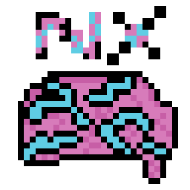
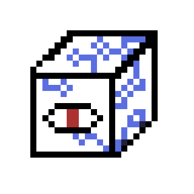
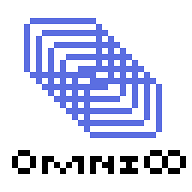

Hardware
About Our Hardware
At XSC, we don’t just build consoles—we engineer thresholds to the unknown. Our hardware is designed for those who crave more than polished menus and safe narratives. The LUDOS offers an analog-digital bridge into experiences that feel eerily alive, while the OmniLoop 0 reinvents the concept of emulation by folding in on itself—capable of running games from platforms that don’t technically exist yet. Each device is forged with intent: to defy conventions, to disorient in the right places, and to leave players questioning where the software ends and the self begins. This is not about specs or frame rates. It’s about possession through interaction. Our systems are built to disturb, delight, and destabilize—with proprietary architectures that challenge both developers and cosmic entities. Whether you're a seasoned interactor of forbidden mechanics or a newcomer eager to glimpse into the future sideways, XSC hardware invites you to boot up and see what happens. Just don't expect to be able to turn it off.
The Neuroplay NX
The Neuroplay NX is a neural-laced visor that feeds games directly into the brain's visual cortex. No screens. No buttons. Only thought. Only risk.
Why play a game, when the game can play you?
XSC is not responsible for any existential crises, brain death, or otherwise discomfort caused by Neuroplay NX.
ChitinBox
A bio-organic console grown from non-euclidean insect DNA. You feed it moisture and pain (special thanks to Masochism INC for their work on this one!). It feeds you procedurally generated horrors in 4K, each ChitinBox using its own unique DNA sequence to give a unique experience to each user.
New ChitinBox exclusive game: Silkcore: Moth-Cathedral!
If ChitinBox shows signs of sapience and pattern recognition, please immediately send a report to XSC or MASO INC. A team will arrive shortly to clean up your mess.
DiceBox
Every game is randomized at the hardware level. Game physics, rules, even genre—all dictated by physical dice rolls before boot-up. One moment you’re playing a rogue-lite platformer, the next it’s a turn-based horror golf RPG with permadeath.
Embrace the chaos cube.
XSC is not responsible for reality-shifting events or perfect cornhole games.
Omniloop 0
Omniloop 0 is our flagship console: a recursive console that can emulate all other consoles—including itself. Eventually collapses into existential recursion and spawns non-Euclidean glitches that feel... familiar.
Comes with a free copy of "Percipitation Perchance"
Warning: prolonged play may cause déjà vu in unborn ancestors.
LUDOS
The first analog-digital spiritual console. Games run only during candlelight. It connects to a haunted server farm deep in the Mariana Trench. You don’t “beat” games, you exorcise them.
Comes with 3 lesser soul gems.
Controllers may smell faintly of regret
The Box
The Box was XSC’s boldest misstep—a console envisioned as a minimalist gateway to pure game essence, free from the distractions of UI, documentation, or ventilation. While the hardware’s potential was undeniable, its launch was marred by a series of unfortunate collaborations—chief among them, a painfully “safe” launch title from Alright Games that failed to harness The Box’s more volatile features. In hindsight, entrusting a reality-fracturing machine to a studio allergic to risk was... optimistic.